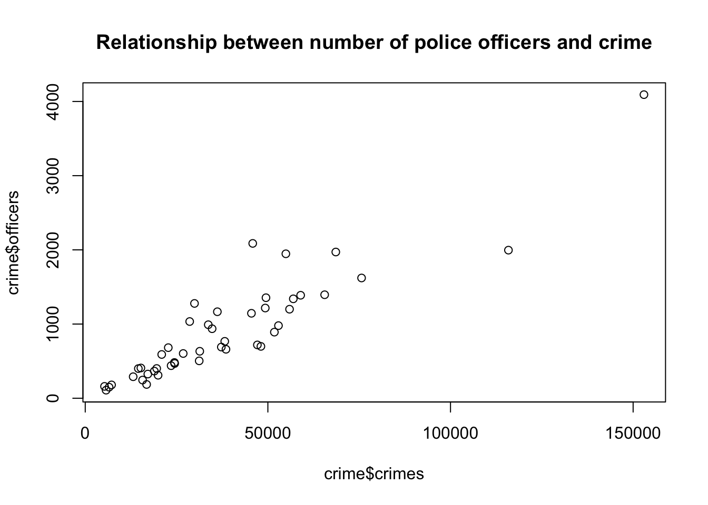

load("~/Desktop/R-workshops/assets/data/crime_v2.Rdata")5 Introduction to Regression Analysis
5.1 Example 1: Crime data
The example and instructions provided in this section is taken from (Riegler 2022).
Suppose you are examining the relationship between number of crimes and number of police officers. Below, we will generate descriptive statistics, create a scatter plot and see how we estimate OLS regression.
We will use the crime data set, which is already saved in Rdata format.
5.1.1 Task 1
Open crime_v2.Rdata (if it not already open). You may so this trough the menu or the command line using the load() function:
5.1.2 Task 2
Check the summary statistics for crimes and officers variables.
summary(crime[, c("crimes", "officers")]) crimes officers
Min. : 5276 Min. : 109.0
1st Qu.: 19658 1st Qu.: 402.8
Median : 32518 Median : 694.5
Mean : 38123 Mean : 902.1
3rd Qu.: 49434 3rd Qu.:1212.0
Max. :152962 Max. :4092.0 # Standard deviation for the 'crimes' variable
sd_crimes <- sd(crime$crimes, na.rm = TRUE)
# Standard deviation for the 'officers' variable
sd_officers <- sd(crime$officers, na.rm = TRUE)
# Print the results
sd_crimes[1] 27660.3sd_officers[1] 721.7255Note the na.rm = TRUE above. This argument ensures that nay NA values are removed before the calculation.
5.1.3 Task 3
In addition to checking summary statistics, it is always wise to visualise your data before getting into more complicated modelling.
For this task, generate a scatter plot with number of crimes on the y-axis and the number of police officers on the x-axis.
plot(crime$officers~crime$crimes,
main = "Relationship between number of police officers and crime")
5.1.4 Task 4
Calculate the Covariance and the Correlation Coefficient between number of crimes and number of police officers. Comment on their values.
5.1.4.1 Guidance
A scatter plot is a good start for identifying relationships between two variables, but it is not sufficient to identify accurately how strong the relationship is between crimes and officers. There are two numerical statistics, that provide information about the relationship between two variables: The Covariance and the Correlation Coefficient.
To produce a Covariance matrix, use the following command:
cov(crime$officers, crime$crimes)[1] 18212436The result is: 18,212,436! This number may appear to be too large but the value we obtain as covariance depends on the measuremetn levels of the variables. This measure (i.e. the covariance) does not provide any information on how strong this relationship between crimes and officers is. It only reveals that there is a positive relationship between the number of police officers and the number of crimes committed.
Instead of using the covariance, we can use a standardised covariance - the correlation coefficient. To calculate the correlation matrix, we only have to adjust slightly the covariance command.
cor(crime$officers, crime$crimes)[1] 0.9123032The correlation coefficient between number of officers and crimes is 0.91. We conclude that there is a strong positive relationship between our two variables.
5.1.5 Task 5
Regress the number of police officers on crimes and comment on:
the sign and magnitude of the regression coefficients
the goodness of fit of the estimated model.
lm(officers ~ crimes, data = crime)
Call:
lm(formula = officers ~ crimes, data = crime)
Coefficients:
(Intercept) crimes
-5.4183 0.0238 We can save this estimation under an object (please note that we use model_1 below, but you may give any name as long as it satisfies the naming conventions):
model_1 <- lm(officers ~ crimes, data = crime)
# display the model
model_1
Call:
lm(formula = officers ~ crimes, data = crime)
Coefficients:
(Intercept) crimes
-5.4183 0.0238 Although we see the estimated coefficients in the above output we do not have information about the other statistics that we need to proceed. We use the summary() function below:
summary(model_1)
Call:
lm(formula = officers ~ crimes, data = crime)
Residuals:
Min 1Q Median 3Q Max
-756.64 -153.71 -25.75 89.64 1000.97
Coefficients:
Estimate Std. Error t value Pr(>|t|)
(Intercept) -5.418291 75.587257 -0.072 0.943
crimes 0.023804 0.001611 14.777 <2e-16 ***
---
Signif. codes: 0 '***' 0.001 '**' 0.01 '*' 0.05 '.' 0.1 ' ' 1
Residual standard error: 298.9 on 44 degrees of freedom
Multiple R-squared: 0.8323, Adjusted R-squared: 0.8285
F-statistic: 218.4 on 1 and 44 DF, p-value: < 2.2e-16The intercept term is not statistically significant.
The crimes variable is statistically significant at 0.1%. (Note the significance codes in the output).
The slope coefficient states that for every additional crime, we observe on average of 0.024 more police officers. Using more reader-friendly numbers, we can also infer that for every 1,000 additional crimes committed within a city, 24 more police officers are employed. Note how the latter way of phrasing makes more sense.
\(R^2\) is the measure that provides information on the overall goodness of fit of the model. In this case it is 0.83. This means that 83% of the variation in police officers can be explained with the variation in number of crimes committed. Our estimated model has a good degree of explanatory power.
Looking at the F-statistic (218.4 with a p-value of almost zero), we can conclude that the model, overall, is statistically significant.
5.1.6 Task 6
Add a regression line to the scatter plot you created in Task 3.
5.1.6.1 Guidance
To add a regression line to the plot, we have to use the previously saved regression object model_1 and add it to the previous scatter plot.
plot(crime$officers~crime$crimes,
main = "Relationship between number of police officers and crime")
abline(model_1)5.2 Example 2: Wage data
5.2.1 Task 1
5.2.1.1 Task
Import wage.xls data into R and view the first few rows of the data to have an idea about the contents of the variables, and then save the data in R format.
5.2.1.2 Guidance
Use read_excel() and head() functions.
# install.packages("readxl")
library(readxl)
# Import Excel data
wage2 <- read_excel("./assets/data/wage2.xls", sheet = "wage2")head(wage2)# A tibble: 6 × 15
wage hours IQ KWW educ exper tenure age married south urban sibs
<dbl> <dbl> <dbl> <dbl> <dbl> <dbl> <dbl> <dbl> <dbl> <dbl> <dbl> <dbl>
1 769 40 93 35 12 11 2 31 1 0 1 1
2 808 50 119 41 18 11 16 37 1 0 1 1
3 825 40 108 46 14 11 9 33 1 0 1 1
4 650 40 96 32 12 13 7 32 1 0 1 4
5 562 40 74 27 11 14 5 34 1 0 1 10
6 1400 40 116 43 16 14 2 35 1 0 1 1
# ℹ 3 more variables: brthord <dbl>, meduc <dbl>, feduc <dbl># Save data in R format
save(wage2, file = "./assets/data/wage2.Rdata")5.2.2 Task 2
5.2.2.1 Task
Label variable educ as “years of schooling” and exper as “years of experience”.
5.2.2.2 Guidance
We will need the expss package to label the variables. The installation and calling of the package is deactivated below since we already have done these steps above. After running the below command check the changes in the data from the Environment window on the top-right.
# install.packages("expss")
library(expss)Loading required package: maditr
To drop variable use NULL: let(mtcars, am = NULL) %>% head()
Use 'expss_output_rnotebook()' to display tables inside R Notebooks.
To return to the console output, use 'expss_output_default()'.wage2 <- apply_labels(wage2,
educ = "years of schooling",
exper = "years of experince")5.2.3 Task 3
5.2.3.1 Task
Generate two new variables: hourly wage and logarithmic wage.
5.2.3.2 Guidance
# Generate new variables
wage2$hourly_wage <- wage2$wage / wage2$hours
wage2$ln_wage <- log(wage2$wage)5.2.4 Task 4
5.2.4.1 Task
Check the summary statistics for (i) the wage variable, (ii) for all variables.
5.2.4.2 Guidance
We will use the summary() function.
# Summary statistics for the wage variable only
summary(wage2$wage) Min. 1st Qu. Median Mean 3rd Qu. Max.
115.0 669.0 905.0 957.9 1160.0 3078.0 # Summary statistics for all variables in wage2 data
summary(wage2) wage hours IQ KWW
Min. : 115.0 Min. :20.00 Min. : 50.0 Min. :12.00
1st Qu.: 669.0 1st Qu.:40.00 1st Qu.: 92.0 1st Qu.:31.00
Median : 905.0 Median :40.00 Median :102.0 Median :37.00
Mean : 957.9 Mean :43.93 Mean :101.3 Mean :35.74
3rd Qu.:1160.0 3rd Qu.:48.00 3rd Qu.:112.0 3rd Qu.:41.00
Max. :3078.0 Max. :80.00 Max. :145.0 Max. :56.00
educ exper tenure age
Min. : 9.00 Min. : 1.00 Min. : 0.000 Min. :28.00
1st Qu.:12.00 1st Qu.: 8.00 1st Qu.: 3.000 1st Qu.:30.00
Median :12.00 Median :11.00 Median : 7.000 Median :33.00
Mean :13.47 Mean :11.56 Mean : 7.234 Mean :33.08
3rd Qu.:16.00 3rd Qu.:15.00 3rd Qu.:11.000 3rd Qu.:36.00
Max. :18.00 Max. :23.00 Max. :22.000 Max. :38.00
married south urban sibs
Min. :0.000 Min. :0.0000 Min. :0.0000 Min. : 0.000
1st Qu.:1.000 1st Qu.:0.0000 1st Qu.:0.0000 1st Qu.: 1.000
Median :1.000 Median :0.0000 Median :1.0000 Median : 2.000
Mean :0.893 Mean :0.3412 Mean :0.7176 Mean : 2.941
3rd Qu.:1.000 3rd Qu.:1.0000 3rd Qu.:1.0000 3rd Qu.: 4.000
Max. :1.000 Max. :1.0000 Max. :1.0000 Max. :14.000
brthord meduc feduc hourly_wage
Min. : 1.000 Min. : 0.00 Min. : 0.00 Min. : 2.30
1st Qu.: 1.000 1st Qu.: 8.00 1st Qu.: 8.00 1st Qu.: 15.07
Median : 2.000 Median :12.00 Median :10.00 Median : 21.02
Mean : 2.277 Mean :10.68 Mean :10.22 Mean : 22.32
3rd Qu.: 3.000 3rd Qu.:12.00 3rd Qu.:12.00 3rd Qu.: 27.70
Max. :10.000 Max. :18.00 Max. :18.00 Max. :102.60
NA's :83 NA's :78 NA's :194
ln_wage
Min. :4.745
1st Qu.:6.506
Median :6.808
Mean :6.779
3rd Qu.:7.056
Max. :8.032
5.2.5 Task 5
5.2.5.1 Task
Calculate the correlation coefficient between wage and education.
5.2.5.2 Guidance
We can calculate the correlation coefficients using the cor() function. In the first example below, the correlation coefficient is reported as a single number, while in the second example, we get a correlation matrix.
In most of empirical work, we are usually interested with pairwise correlations among all variables. Hence, we may use the correlation matrix to check the binary correlations among all variables in our sample. This is provided in the third example below.
The "use = complete.obs" added to the commands below asks R to handle missing values by casewise deletion.
# Correlation
cor(wage2$wage, wage2$educ)[1] 0.3271087# Correlation
cor(wage2[, c("wage", "educ")], use = "complete.obs") wage educ
wage 1.0000000 0.3271087
educ 0.3271087 1.0000000cor(wage2, use = "pairwise.complete.obs") wage hours IQ KWW educ
wage 1.000000000 -0.009504302 0.30908783 0.32613058 0.32710869
hours -0.009504302 1.000000000 0.07383930 0.11388938 0.09100889
IQ 0.309087827 0.073839301 1.00000000 0.41351552 0.51569701
KWW 0.326130577 0.113889381 0.41351552 1.00000000 0.38813424
educ 0.327108690 0.091008888 0.51569701 0.38813424 1.00000000
exper 0.002189702 -0.062126227 -0.22491253 0.01745245 -0.45557312
tenure 0.128266391 -0.055528006 0.04215883 0.14139800 -0.03616655
age 0.156701761 0.024811636 -0.04374091 0.39305297 -0.01225396
married 0.136582670 0.032563350 -0.01466753 0.08994782 -0.05856602
south -0.159387287 -0.029519177 -0.20978466 -0.09439242 -0.09703298
urban 0.198406472 0.016573046 0.03893553 0.09819025 0.07215091
sibs -0.159203728 -0.049602555 -0.28477277 -0.28497534 -0.23928810
brthord -0.145485385 -0.043129582 -0.17943947 -0.15358472 -0.20499246
meduc 0.214831839 0.076619806 0.33180383 0.24079168 0.36423913
feduc 0.237586922 0.063172297 0.34390758 0.23488927 0.42692545
hourly_wage 0.931240501 -0.317645466 0.26502635 0.26059936 0.27167136
ln_wage 0.953141156 -0.047219079 0.31478770 0.30627128 0.31211665
exper tenure age married south
wage 0.002189702 0.12826639 0.156701761 0.136582670 -0.15938729
hours -0.062126227 -0.05552801 0.024811636 0.032563350 -0.02951918
IQ -0.224912532 0.04215883 -0.043740911 -0.014667528 -0.20978466
KWW 0.017452446 0.14139800 0.393052967 0.089947816 -0.09439242
educ -0.455573115 -0.03616655 -0.012253956 -0.058566019 -0.09703298
exper 1.000000000 0.24365440 0.495329763 0.106349115 0.02125724
tenure 0.243654402 1.00000000 0.270601647 0.072605374 -0.06169141
age 0.495329763 0.27060165 1.000000000 0.106980249 -0.02947768
married 0.106349115 0.07260537 0.106980249 1.000000000 0.02275672
south 0.021257241 -0.06169141 -0.029477681 0.022756718 1.00000000
urban -0.047385845 -0.03848582 -0.006749288 -0.040248179 -0.10989797
sibs 0.064310470 -0.03916116 -0.040719238 -0.004327422 0.06631979
brthord 0.088300019 -0.02847775 0.005435916 -0.014737189 0.09370679
meduc -0.186317286 -0.01496769 -0.029319099 -0.022763437 -0.15787359
feduc -0.256792630 -0.05924123 -0.071303285 -0.020324390 -0.17236334
hourly_wage 0.017757793 0.13541822 0.126683019 0.115115701 -0.14716118
ln_wage 0.020601158 0.18585262 0.161822314 0.149975894 -0.19481092
urban sibs brthord meduc feduc
wage 0.198406472 -0.159203728 -0.145485385 0.21483184 0.23758692
hours 0.016573046 -0.049602555 -0.043129582 0.07661981 0.06317230
IQ 0.038935525 -0.284772765 -0.179439471 0.33180383 0.34390758
KWW 0.098190247 -0.284975345 -0.153584717 0.24079168 0.23488927
educ 0.072150908 -0.239288104 -0.204992462 0.36423913 0.42692545
exper -0.047385845 0.064310470 0.088300019 -0.18631729 -0.25679263
tenure -0.038485824 -0.039161158 -0.028477749 -0.01496769 -0.05924123
age -0.006749288 -0.040719238 0.005435916 -0.02931910 -0.07130328
married -0.040248179 -0.004327422 -0.014737189 -0.02276344 -0.02032439
south -0.109897970 0.066319792 0.093706790 -0.15787359 -0.17236334
urban 1.000000000 -0.031468824 0.002419787 0.03402366 0.11223944
sibs -0.031468824 1.000000000 0.593913799 -0.28715120 -0.23202649
brthord 0.002419787 0.593913799 1.000000000 -0.27593376 -0.23037060
meduc 0.034023660 -0.287151198 -0.275933760 1.00000000 0.57649476
feduc 0.112239438 -0.232026494 -0.230370600 0.57649476 1.00000000
hourly_wage 0.189240304 -0.131364072 -0.120293460 0.18348733 0.20469678
ln_wage 0.203797585 -0.152809172 -0.141852712 0.21357476 0.22338514
hourly_wage ln_wage
wage 0.93124050 0.95314116
hours -0.31764547 -0.04721908
IQ 0.26502635 0.31478770
KWW 0.26059936 0.30627128
educ 0.27167136 0.31211665
exper 0.01775779 0.02060116
tenure 0.13541822 0.18585262
age 0.12668302 0.16182231
married 0.11511570 0.14997589
south -0.14716118 -0.19481092
urban 0.18924030 0.20379758
sibs -0.13136407 -0.15280917
brthord -0.12029346 -0.14185271
meduc 0.18348733 0.21357476
feduc 0.20469678 0.22338514
hourly_wage 1.00000000 0.89974921
ln_wage 0.89974921 1.00000000The above table is informative but the reported numbers have far too many decimals. It is distracting our focus. Below, we round these in two decimal points, which is enough to have an idea about the strength of the correlation between our variables
# Calculate pairwise correlations and store them under name cor_matrix
cor_matrix <- cor(wage2, use = "pairwise.complete.obs")
# Round the correlation values to 2 decimal places and save them under the name rounded_cor_matrix
rounded_cor_matrix <- round(cor_matrix, 2)
# Display the rounded correlation matrix
print(rounded_cor_matrix) wage hours IQ KWW educ exper tenure age married south
wage 1.00 -0.01 0.31 0.33 0.33 0.00 0.13 0.16 0.14 -0.16
hours -0.01 1.00 0.07 0.11 0.09 -0.06 -0.06 0.02 0.03 -0.03
IQ 0.31 0.07 1.00 0.41 0.52 -0.22 0.04 -0.04 -0.01 -0.21
KWW 0.33 0.11 0.41 1.00 0.39 0.02 0.14 0.39 0.09 -0.09
educ 0.33 0.09 0.52 0.39 1.00 -0.46 -0.04 -0.01 -0.06 -0.10
exper 0.00 -0.06 -0.22 0.02 -0.46 1.00 0.24 0.50 0.11 0.02
tenure 0.13 -0.06 0.04 0.14 -0.04 0.24 1.00 0.27 0.07 -0.06
age 0.16 0.02 -0.04 0.39 -0.01 0.50 0.27 1.00 0.11 -0.03
married 0.14 0.03 -0.01 0.09 -0.06 0.11 0.07 0.11 1.00 0.02
south -0.16 -0.03 -0.21 -0.09 -0.10 0.02 -0.06 -0.03 0.02 1.00
urban 0.20 0.02 0.04 0.10 0.07 -0.05 -0.04 -0.01 -0.04 -0.11
sibs -0.16 -0.05 -0.28 -0.28 -0.24 0.06 -0.04 -0.04 0.00 0.07
brthord -0.15 -0.04 -0.18 -0.15 -0.20 0.09 -0.03 0.01 -0.01 0.09
meduc 0.21 0.08 0.33 0.24 0.36 -0.19 -0.01 -0.03 -0.02 -0.16
feduc 0.24 0.06 0.34 0.23 0.43 -0.26 -0.06 -0.07 -0.02 -0.17
hourly_wage 0.93 -0.32 0.27 0.26 0.27 0.02 0.14 0.13 0.12 -0.15
ln_wage 0.95 -0.05 0.31 0.31 0.31 0.02 0.19 0.16 0.15 -0.19
urban sibs brthord meduc feduc hourly_wage ln_wage
wage 0.20 -0.16 -0.15 0.21 0.24 0.93 0.95
hours 0.02 -0.05 -0.04 0.08 0.06 -0.32 -0.05
IQ 0.04 -0.28 -0.18 0.33 0.34 0.27 0.31
KWW 0.10 -0.28 -0.15 0.24 0.23 0.26 0.31
educ 0.07 -0.24 -0.20 0.36 0.43 0.27 0.31
exper -0.05 0.06 0.09 -0.19 -0.26 0.02 0.02
tenure -0.04 -0.04 -0.03 -0.01 -0.06 0.14 0.19
age -0.01 -0.04 0.01 -0.03 -0.07 0.13 0.16
married -0.04 0.00 -0.01 -0.02 -0.02 0.12 0.15
south -0.11 0.07 0.09 -0.16 -0.17 -0.15 -0.19
urban 1.00 -0.03 0.00 0.03 0.11 0.19 0.20
sibs -0.03 1.00 0.59 -0.29 -0.23 -0.13 -0.15
brthord 0.00 0.59 1.00 -0.28 -0.23 -0.12 -0.14
meduc 0.03 -0.29 -0.28 1.00 0.58 0.18 0.21
feduc 0.11 -0.23 -0.23 0.58 1.00 0.20 0.22
hourly_wage 0.19 -0.13 -0.12 0.18 0.20 1.00 0.90
ln_wage 0.20 -0.15 -0.14 0.21 0.22 0.90 1.005.2.6 Task 6
5.2.6.1 Task
Examine the relationship between education and wage using a scatter plot.
5.2.6.2 Guidance
We use the ggplot2 package to draw plots. First install the package and call the library.
# install.packages("ggplot2")
library(ggplot2)
Attaching package: 'ggplot2'The following object is masked from 'package:expss':
varsEducation is expected to have a positive impact on wage. In our scatter plot, educ will be on the horizontal-axis while wage will be on the vertical-axis.
# Scatter plot
ggplot(wage2, aes(x = educ, y = wage)) +
geom_point() +
labs(title = "Scatter plot of Wage vs. Education", x = "Years of Schooling", y = "Wage")You see above the full set of lines to create this plot. But let us do this step by step to have a better understanding. First, we bring the educ and wage variables from the wage2 data and position these on our plot.
ggplot(wage2, aes(x = educ, y = wage))We then add (using the + sign), the observations in our data, represented by dots.
ggplot(wage2, aes(x = educ, y = wage)) +
geom_point() It is always good practice to give a title for your plot. Notice also that the horizontal and vertical axes above are labelled by the variable names. We may also replace these with proper definitions of the variables. This is to make it easier for the readers to understand your plots:
ggplot(wage2, aes(x = educ, y = wage)) +
geom_point() +
labs(title = "Scatter plot of Wage vs. Education", x = "Years of Schooling", y = "Wage")5.2.7 Task 7
5.2.7.1 Task
Tabulate the urban variable to see the distribution of observations in rural and urban areas
5.2.7.2 Guidance
We use the table() function for that purpose.
table(wage2$urban)
0 1
264 671 5.2.8 Task 8
5.2.8.1 Task
Let’s say we are interested to plot the education-wage relationship differentiating between people in rural and urban areas. Replicate the scatter plot above, but this time, using different colors for rural and urban.
5.2.8.2 Guidance
Notice how we add the color = urban option below. We do the same for the label too.
# Scatter plot - colored by urban
ggplot(wage2, aes(x = educ, y = wage, color = urban)) +
geom_point() +
labs(title = "Scatter plot of Wage vs. Education", x = "Years of Schooling", y = "Wage", color = "urban")
The labelling of the above plot looks as if we have a range of values for the urban variable, changing from zero to one. The urban variable, in fact, is a dummy, taking two values only: zero for rural and one for urban residence. If you look into this variable entry in more detail, you will see that it is stored as num. We can change this using the factor() function. Instead of overriding the urban variable, let’s create a new variable urban_residence to see a comparison.
wage2$urban_residence <- factor(wage2$urban, levels = c(0,1), labels = c("rural", "urban"))Below, we view the two variables using R’s dplyr package.
# install.packages("dplyr")
library(dplyr)
Attaching package: 'dplyr'The following objects are masked from 'package:expss':
compute, contains, na_if, recode, vars, whereThe following objects are masked from 'package:maditr':
between, coalesce, first, lastThe following objects are masked from 'package:stats':
filter, lagThe following objects are masked from 'package:base':
intersect, setdiff, setequal, unionView(select(wage2, urban, urban_residence))Let’s re-run our scatter plot code again (but replacing urban with urban_residence:
# Scatter plot - colored by urban
ggplot(wage2, aes(x = educ, y = wage, color = urban_residence)) +
geom_point() +
labs(title = "Scatter plot of Wage vs. Education", x = "Years of Schooling", y = "Wage", color = "urban_residence")5.2.9 Task 9
5.2.9.1 Task
Estimate a regression model where wage is regressed on education. Interpret the results.
5.2.9.2 Guidance
We use the lm() function to estimate linear regression models. You may read ~ in wage ~ educ below as “approximately modelled as” James et al. (2023). We may also say “wage is regressed on education”.
# Linear regression
model_1 <- lm(wage ~ educ, data = wage2)
summary(model_1)
Call:
lm(formula = wage ~ educ, data = wage2)
Residuals:
Min 1Q Median 3Q Max
-877.38 -268.63 -38.38 207.05 2148.26
Coefficients:
Estimate Std. Error t value Pr(>|t|)
(Intercept) 146.952 77.715 1.891 0.0589 .
educ 60.214 5.695 10.573 <2e-16 ***
---
Signif. codes: 0 '***' 0.001 '**' 0.01 '*' 0.05 '.' 0.1 ' ' 1
Residual standard error: 382.3 on 933 degrees of freedom
Multiple R-squared: 0.107, Adjusted R-squared: 0.106
F-statistic: 111.8 on 1 and 933 DF, p-value: < 2.2e-16In the above regression output, we see that education has a statistically significant impact on wages. Each year of schooling increases wage by around £60, on average. The F test tells us that the regression model has an explanatory power, even though the R-squared value is low.
5.2.10 Task 10
5.2.10.1 Task
Using the regression model above, predict what the wage would be for given values of education (how much do we expect the wage would be for given years of schooling).
5.2.10.2 Guidance
Below, we recall model_1 to calculate predicted values; save the predictions under name wage_hat under wage2 data.
# Save predicted values under name wage_hat
wage2$wage_hat <- predict(model_1)5.2.11 Task 11
5.2.11.1 Task
Add the estimated regression line to the wage-education scatter plot.
5.2.11.2 Guidance
We will be adding the regression line to the scatter plot we produced above. We use geom_smooth for this purpose. Let’s first remember what we did before:
# Scatter plot of education and wage
ggplot(wage2, aes(x = educ, y = wage)) +
geom_point() +
labs(title = "Scatter plot with Fitted Line", x = "Years of Schooling", y = "Wage")Now, let’s add the regression line:
# Scatter plot with fitted line
ggplot(wage2, aes(x = educ, y = wage)) +
geom_point() +
geom_smooth(method = "lm", se = FALSE) +
labs(title = "Scatter plot with Fitted Line", x = "Years of Schooling", y = "Wage")`geom_smooth()` using formula = 'y ~ x'the geom_smooth(method = "lm") asks R to add a line estimating a “linear model” (i.e. a regression) of wage on educ.
Note that we could save this plot as an object by assigning it a name on the left hand side of the command. We will do that below and name the plot as scatter_wage_educ.
Can you guess what the plot would look if we changed se = FALSE to se = TRUE above? We can also try that below:
# Scatter plot with fitted line
scatter_wage_educ <- ggplot(wage2, aes(x = educ, y = wage)) +
geom_point() +
geom_smooth(method = "lm", se = TRUE) +
labs(title = "Scatter plot with Fitted Line", x = "Years of Schooling", y = "Wage")
print(scatter_wage_educ)`geom_smooth()` using formula = 'y ~ x'We could also add this sample regression line by using the wage_hat variable. wage_hat shows the predicted value of wage given observed values of education.
# Scatter plot with fitted line
# we add the wage_hat variable
ggplot(wage2, aes(x = educ, y = wage)) +
geom_point() +
geom_line(aes(y = wage_hat), color = "blue", size = 1) +
labs(title = "Scatter plot with Fitted Line", x = "Years of Schooling", y = "Wage")Warning: Using `size` aesthetic for lines was deprecated in ggplot2 3.4.0.
ℹ Please use `linewidth` instead.Note that we used geom_line() this time to add a line plot of an already existing variable in the data set.
ggplot(wage2, aes(x = educ, y = wage))creates a canvas, a plot area with educ at the horizontal and wage at the vertical axisgeom_point()adds a scatterplot ofwageagainsteduc.geom_line(aes(y = wage_hat))adds the line for the predictedwage_hatvalues. Theaes(y = wage_hat)ensures the line graph useswage_haton the y-axis while sharing the x-axis (educ).colorandsizeare optional for styling the line. Try experimenting with these and observe the changes.
5.2.12 Task 12
5.2.12.1 Task
Estimate a multiple regression model by adding experience and urban residence into the above regression. Save it under name model_2
5.2.12.2 Guidance
We will add exper and urban variables into the regression model using + sign.
# Linear regression
model_2 <- lm(wage ~ educ + exper + urban, data = wage2)
summary(model_2)
Call:
lm(formula = wage ~ educ + exper + urban, data = wage2)
Residuals:
Min 1Q Median 3Q Max
-799.67 -234.04 -34.26 197.89 2119.62
Coefficients:
Estimate Std. Error t value Pr(>|t|)
(Intercept) -362.821 106.419 -3.409 0.000679 ***
educ 74.119 6.193 11.968 < 2e-16 ***
exper 17.940 3.105 5.777 1.03e-08 ***
urban 160.306 26.920 5.955 3.69e-09 ***
---
Signif. codes: 0 '***' 0.001 '**' 0.01 '*' 0.05 '.' 0.1 ' ' 1
Residual standard error: 369.5 on 931 degrees of freedom
Multiple R-squared: 0.1676, Adjusted R-squared: 0.1649
F-statistic: 62.47 on 3 and 931 DF, p-value: < 2.2e-16How does model_2 compare to model_1?
5.2.13 Task 13
5.2.13.1 Task
Save your data to keep the newly created hourly_wage and ln_wage variables.
5.2.13.2 Guidance
# Save data in R format
save(wage2, file = "./assets/data/wage2.Rdata")5.2.14 A Gentle Introduction to dplyr library
The dplyr library comes with R’s tidyverse package. The ggplot2 library we used above to produce plots is also a part of the tidyverse package.
I will replicate below a few of the tasks that we performed above using the dplyr library
5.2.14.1 Viewing data
We have seen before to use View to see the contents of data in a spreadsheet format:
View(wage2)We may use dplyr to select variables for viewing. Using select allows us to “keep or drop columns using their names and types”.
View(select(wage2, wage, educ, exper, urban, urban_residence))5.2.14.2 Generating new variables
We used the following lines to create hourly_wage and ln_wage variables:
# Generate new variables
wage2$hourly_wage <- wage2$wage / wage2$hours
wage2$ln_wage <- log(wage2$wage)dplyr ’s mutate us used to “create, modify, and delete columns”. Let us create a new data frame, wage2_new to see what it does:
wage2_new <- wage2 %>%
mutate (
hourly_wage_n = wage / hours,
ln_wage_n = log(wage)
)In the above lines, we create a new data frame based on wage2 . Note the %>% above. This is a part of the command and is called the pipe operator. It helps us to simply the code and do the operations one step after another. We first call wage2 and create the new variables, hourly_wage_n and ln_wage_n .
Note how we avoided the use of wage2$ every time we referred to a variable in wage2 data.
Another example we used to create a new variable was when we predicted values of wage for given levels of education after estimating model_1.
Below is the code we used:
wage2$wage_hat <- predict(model_1)We can do this as follows using dplyr
wage2 <- wage2 %>%
mutate(
wage_hat_n = predict(model_1)
)5.2.14.3 Tabulating Variables
We used the code below to tabulate values of urban variable
table(wage2$urban)
0 1
264 671 we may use count in dplyr for this purpose
wage2 %>%
count(urban)# A tibble: 2 × 2
urban n
<dbl> <int>
1 0 264
2 1 671Remember that we could save this as a new object:
urban_table <- wage2 %>%
count(urban)
print(urban_table)# A tibble: 2 × 2
urban n
<dbl> <int>
1 0 264
2 1 671Which output do you prefer?
5.3 Further Exercises
Download the data set called EAWE21.Rdata from the module page on Aula and save it. This is a subset of the Educational Attainment and Wage Equations data set used in Dougherty (2016) available from https://global.oup.com/uk/orc/busecon/economics/dougherty5e/student/datasets/eawe/. For this exercise we are interested in two variables:
EXP : Total out-of-school work experience (years) as of the 2002 interview
EARNINGS : Current hourly earnings in $ reported at the 2002 interview
5.3.1 Tasks
Calculate summary statistics (mean, median, minimum, maximum) for the variables EXP and EARNINGS
Draw scatter plot of EARNINGS on EXP.
Calculate the covariance and correlation between earnings and exp and comment on the values
Regress EARNINGS on EXP and comment on
- the sign and size of the regression coefficients
- the goodness of fits of the estimated model.
Add a regression line to the scatter plot.